Dress Up reports · ^du_report(4) · 2026-10-18 · about Messed Up Dress Up, a game made with M and N · after ^du_report(3)
One folder, every run
How can the game's picture archive keep a year or more of runs in one repository, and what did moving it show about the pictures themselves? The archive passed GitHub Pages' 1 GB after five runs; on 2026-10-18 it was moved to a new layout (^ticket(272)). Measured that day, on the archives' own files and on GitHub's computers.
Short answers. Sizes are the archives' files, MB of 106 bytes; git's sizes are MiB. Each run is one run of the archive (below).
- The PNGs were most of it, and now there are none. A run's PNGs (every picture 1920 wide) came to 185.1 to 396.9 MB, 88.2 to 369.3 MB of it new after the links to earlier runs. No PNG is kept now: a PNG is drawn from the SVG when someone asks for one, in their own browser.
- One folder, rewritten by every run, and every run a git tag. Git stores a file once however many runs share it, and a file that changes a little as a small difference. The same five runs take 24.44 MiB this way, against 768 MiB on GitHub before; with today's sixth, 30.99 MiB. A run added 97.2 to 312.5 MiB to git before, and 1.62 to 9.78 MiB now. The site holds only the newest run: 132 MB, against 1.3 GB.
- The thumbnails are the same size, 7.3 MB for 530 before and 7.4 MB for 530 now, drawn by Chrome from the SVG instead of by ffmpeg from the PNG. Every one changed once, today, with the encoder: about 7 of today's 7.6 MiB.
- The settings file did not decide its drawing. Four things outside it changed every run, so the archive kept "changes" that were not changes: the settings file's own saved time (no settings file was ever the same as the run before's: 367 of 367 stored again on 10/17), animation phases read from the page's clocks, random choices (a figure's clip-path id), and bubble space's bubbles, a simulation that moves every frame. The archive holds the clocks and the random still now, and two runs of one game commit come out the same but for bubble space, a simulation whose bubbles move every frame.
^ticket(274)would put what decides a drawing in the file, and^ticket(275)would mark the rest as extra. - 0.0.198's hidden drawings, left out, look the same. The waterfall's SVG went from 183 to 116 KB and from 634 to 504 shapes, with the same 63 animations; 0.54% of its pixels differ. In the eight places compared, 0.05% to 1.48% differ.
The places that lost their hidden drawings
Released in 0.0.198 (2026-10-17): in each place, a tree, pine, leaf pad, bush's pad or flower more than 75% hidden behind what is drawn in front of it is left out. Each pair below is the game's own drawing at 0.0.197 and at 0.0.201, from the two runs of the archive either side, moving; the third picture is drawn here, by your browser, from the two: each still, with the pixels that differ in magenta over a faded copy.

0.0.197 · 183 KB · 634 shapes
0.0.201 · 116 KB · 504 shapes
0.0.197 · 335 KB · 1,476 shapes
0.0.197 · 214 KB · 779 shapes
0.0.201 · 192 KB · 719 shapesWhere the magenta falls: on the edges of what was left out, which could show by up to a quarter (the far jungle beside the waterfall's cliff, the far rows of trees in the clearing, the tree house's leaves and the flowers at its foot), and on the ripples round the friend in the water, which move. The rest of each picture is the same, in 10% (the tree house) to 37% (the waterfall) fewer bytes.
| place (with the friend) | SVG, 0.0.197 → 0.0.201 | shapes drawn | animations | pixels that differ |
|---|---|---|---|---|
| waterfall | 183 → 116 KB (-37%) | 634 → 504 | 63 → 63 | 0.54% |
| clearing | 335 → 299 KB (-11%) | 1,476 → 1,394 | 13 → 13 | 1.48% |
| treehouse | 214 → 192 KB (-10%) | 779 → 719 | 36 → 36 | 1.20% |
| castle | 215 → 197 KB (-9%) | 1,020 → 980 | 19 → 19 | 0.17% |
| cemetery | 131 → 116 KB (-11%) | 719 → 692 | 32 → 32 | 0.05% |
| fairyforest | 135 → 126 KB (-7%) | 608 → 582 | 32 → 32 | 1.24% |
| forest | 106 → 100 KB (-6%) | 465 → 443 | 16 → 16 | 1.40% |
| house | 118 → 108 KB (-8%) | 442 → 424 | 12 → 12 | – |
| lake | 154 → 149 KB (-3%) | 641 → 632 | 37 → 37 | 0.17% |
| all 39 places | 5.84 → 5.47 MB (-6.4%) | 22,341 → 21,907 | 820 → 820 |
Shapes drawn: the SVG's path, polygon, polyline, ellipse, circle, rect, line, use, text and image elements. The release notes count 675 fewer drawn across the places at their defaults; this count is of shapes in the 39 pictures with the friend, so the two differ. Between these two runs the game also changed where the friend arrives (0.0.200) and the music's timing (0.0.199), so a difference can be one of those. Pixels compared by Chrome 152 on Matthew's laptop, each picture still, 960 wide.
Where the space went
| run | game | drawings | PNGs, the whole run | PNGs stored (not links) | SVGs | settings JSON | WebP thumbnails | added to git |
|---|---|---|---|---|---|---|---|---|
| 2026/10/15 | 0.0.36 | 266 | 185.1 MB | 185.1 MB (266) | 35.9 MB | 6.6 MB | 3.8 MB | 177.8 MiB → 3.99 MiB |
| 2026/10/15/20-44 | 0.0.55 | 323 | 241.2 MB | 241.2 MB (323) | 57.9 MB | 13.7 MB | 4.5 MB | 225.9 MiB → 5.19 MiB |
| 2026/10/16 | 0.0.90 | 349 | 245.5 MB | 203.1 MB (297) | 69.2 MB | 14.9 MB | 4.8 MB | 197.2 MiB → 3.73 MiB |
| 2026/10/17 | 0.0.94 | 367 | 260.9 MB | 88.2 MB (103) | 76.4 MB | 15.7 MB | 5.1 MB | 97.2 MiB → 1.62 MiB |
| 2026/10/17/22-28 | 0.0.197 | 530 | 396.9 MB | 369.3 MB (495) | 99.0 MB | 37.2 MB | 7.3 MB | 312.5 MiB → 9.78 MiB |
| 2026/10/18 | 0.0.201 | 530 | none | none | 92.5 MB | 37.5 MB | 7.4 MB | 7.6 MiB |
"The whole run" counts every file, links followed; "stored" counts only files that were not links to an earlier run. The first 10/15 run (0.0.36) survived only in git: the second (0.0.55) was written over it in the same folder; both are runs in the new archive.
One folder, every run a tag
The new dress-up-pictures keeps one folder, pictures/, replaced whole by each run: each drawing's SVG (animations and all), its settings in the game's save format (the game's 📂 Load opens them) and a 480-wide WebP thumbnail, with the run's manifest and page. Each run is a tag, run-2026-10-18; runs.json lists them. The site serves the newest run; the picture viewer reads an earlier one from its tag, and GitHub shows a tag's files or gives it as a zip. The five runs before the move were replayed into it from the old archive's commits, so its history starts at 2026-10-15.
The old archive is kept as it was, read-only, as dress-up-pictures-2026-10-18, PNGs and all; a link into its folders by day under the old name is sent there. The music archive, dress-up-music, moved the same way: one copy of each tune, music/<tune>.mp3, each run a tag. Its second run (0.0.201) recorded one tune, the 🔥 turtle super-dub step; the other 28 had not changed since 0.0.42 and kept their files, so the run cost only the new tune's 1.5 MB.
Runs are made on GitHub's computers (Chrome 155, headless), as no browser runs on Matthew's laptop since 2026-10-16; the laptop only adds a finished run, with no browser and no ffmpeg. A year of daily runs at today's 2 to 10 MiB a run would come to roughly 0.7 to 2 GB, under GitHub's 5 GB for a repository; the site stays one run's size.
The thumbnails
Before, each thumbnail was made on the laptop from the 1920-wide PNG, scaled to 480 by ffmpeg (WebP, quality 72). Now Chrome draws the SVG 480 wide and encodes it (WebP, quality 0.72), in the same run that draws the pictures, so no PNG is made at all. For the 530 pictures of a run: 7.3 MB before, 7.4 MB now. All 530 differ in their bytes from the run before, once; from now on a thumbnail changes when its drawing does.
What the settings file does not decide
A drawing's settings file is meant to draw it again: Load it in the game at the run's version, and the same picture comes out. Moving the archive showed four things that changed between runs while the settings stayed the same:
| what | where, in 0.0.201 | what it did to the archive |
|---|---|---|
| the saved time | 24-surprise-save-start-over.js:135 writes saved: d.toISOString(); Load (line 208 on) never reads it | no settings file was ever byte-equal to an earlier run's: 349 of 349 stored on 10/16, 367 of 367 on 10/17 |
| animation phases from the page's clocks | fairyPhase (08-body.js:132) from performance.now(); lfoBegin (08-body.js:614) from the picture's SVG clock less musicSeconds() (08-body.js:587), the page's clock when no tune sounds | an animated drawing came out different every run |
| random choices | a figure's clip-path id, fig-clip- and six random letters (18-drawing.js:900); bubble space's bubbles (14-outdoors.js:826) | the climbs and bubble space differed between two runs of one game commit; seeded, the climbs match |
| a simulation's state | bubble space's bubbles, moved every frame by bubbleTick (14-outdoors.js:819), timed by requestAnimationFrame | bubble space's 6 pictures differed between two runs of one game commit even with the clocks held and the random seeded |
The old archive linked a file to the run before's only when the two were the same, byte for byte. Its counts show what got through: on 10/17, 103 of 367 PNGs were new (a still leaves the animations out), but 265 of 367 SVGs and 367 of 367 settings files.
What the archive does now (archive.mjs, 5d19609 and a73a50a): it leaves the saved time out of the settings it keeps (Load ignores it), holds the page's clocks at 0 before each picture, and gives the page a seeded random, started from the same seed before each picture. Two runs of one game commit, at once on GitHub, with the clocks held: 15 of 525 SVGs still differed (bubble space (6: plain, made of, collision boxes, each with and without the friend) and 9 climbs (clip-path ids)), and none of the settings files. Run again with the seeded random (the same two runs, again at once): the climbs now match too, and of 525 drawings only bubble space still differs, its 6 SVGs and their 6 thumbnails; every drawing's settings file matched. Bubble space is a simulation: its bubbles move a little every frame, timed by the frame itself (requestAnimationFrame), so where they stand depends on how many frames ran before the picture was taken, and nothing in the settings says.
Two kinds of file, proposed. The game's own save should carry what decides the drawing, a random seed and a time origin for the phases, and for a simulation like bubble space either its state or a rule that draws it from the seed and the time, so that its file alone draws the same SVG every time (^ticket(274)). Beside it, a full snapshot: the same file plus extra fields that do not decide the drawing and are there for the person who made the file, the date and time it was saved first among them (^ticket(275)). The picture archive keeps the first kind and never stores a new time for an unchanged picture. Marked as extra in the format itself, the extra fields can be dropped by a tool that does not know their names. One more to look at: Load keeps the player's music volume and mute, not the file's.
What we got wrong on the way
- We read the old links as "unchanged". They only ever caught byte-equal files, and a settings file could never be one: its saved time saw to that.
- We first called 387 of 408 changed SVGs noise, in a commit message, from a check that only knew CSS delays: it had found 21. The message was corrected within minutes; samples of the rest showed SMIL begins changed too, beside real changes.
- The workflow's first push went without the workflow: a shell chain meant to stop at its first failure (
set -e, inline) did not, and pushed the rest. Fixed at once; the one test run it started was cancelled. - Matthew's laptop crashed 30 seconds into this work, at a load of 0.16, during a two-second read of the archive: nothing was lost, and the work since ran one light step at a time.
What next
- 1. A save file that fully draws its picture: a random seed and a time origin in the file, read by the drawing instead of Math.random and the page's clocks, and bubble space's bubbles drawn from them (or kept in the file); then the archive's own stilling can go. Until then, the archive could hold the frames' time still too, for bubble space. Now
^ticket(274). - 2. The full snapshot, with its extra fields marked as such (the saved time first), and the picture file without them. Now
^ticket(275). - 3. Runs without the laptop: the workflow commits and tags its run itself, with a token that can write to the two archives (Matthew's to make); the laptop's step (a 140 MB download,
add_run.sh) goes away. Now^ticket(276). - 4. Watch the size: each run's entry in
runs.jsonsays what it added to git, and the front page a running total, so the archive's growth is read, not guessed. Now^ticket(277).
How this was put together
Sizes. The old archive's files from its last commit (1d43134) and, for the first 10/15 run, from git (81c6e6c, git ls-tree -l); "stored" leaves out symlinks. What a run added to git: git rev-list --objects --disk-usage between run commits, on the laptop (loose objects) for the old archive, packed (git repack -ad) for the new; GitHub's size from its API. The new archive's runs 1 to 5 are the old ones replayed (tools/replay_dated_runs.mjs); run 6 is run 39137062653, the game at 61e2efb (0.0.201).
Shapes and pixels. Shapes are counted in each SVG by element name. Pixels: each pair drawn still (its animate elements and CSS animations taken out), 960 wide on white, by Chrome 152 in the desktop app on Matthew's laptop, both files from the published archives; a pixel differs when a channel differs by more than 16 of 255 (and, in the data, 48). The difference pictures on this page are drawn again by the reader's browser, the same way, 480 wide.
Runs alike. Two runs of one game commit at once on GitHub (run 39138361693, run 39138363460), then both run again with the seeded random; each run's files downloaded and compared one by one. (Each run also prints a fingerprint of all its files of a kind, but that takes in its manifest and source.json, which carry the run's own time, so it never matches.)
The data is here twice: embedded in this page (<script type="application/json" id="report-data">) and as files in 004/data/: report.json (every number here), with the measurements behind it. The page is built from it by 004/drivers/build.py. The pictures are the archives' (2026/10/17/22-28 and 2026/10/18), copied into 004/pictures/.